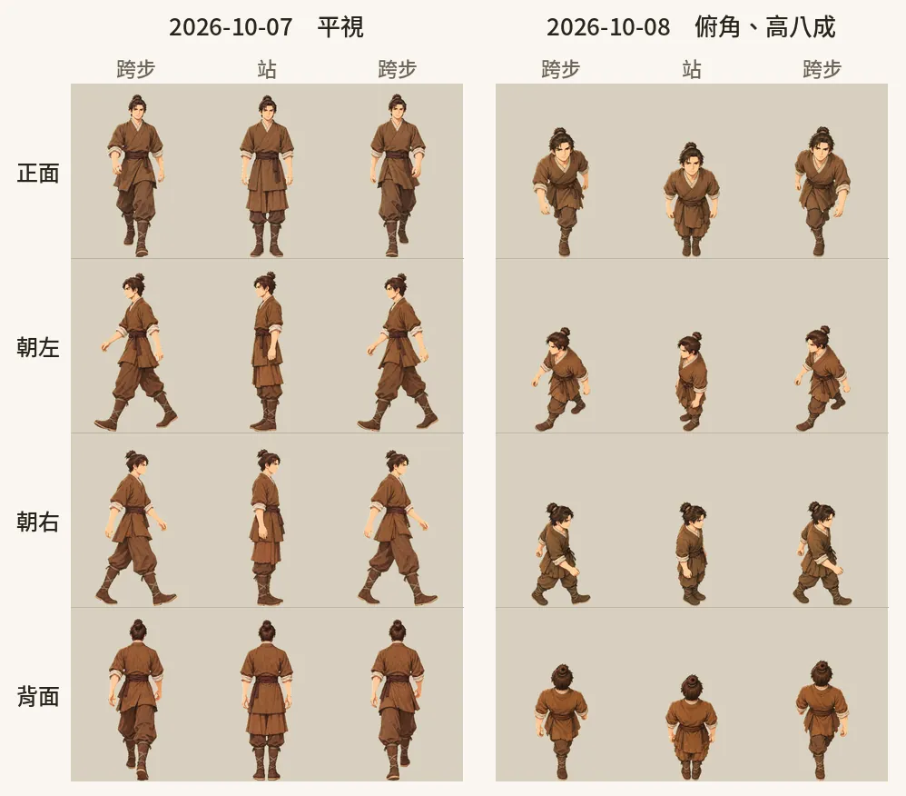
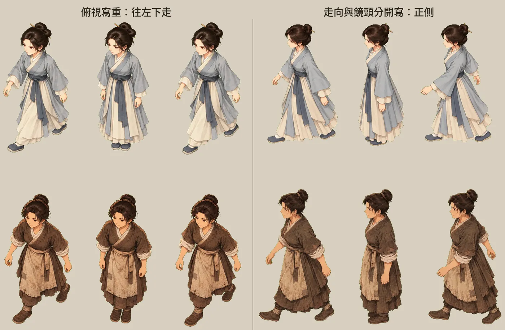
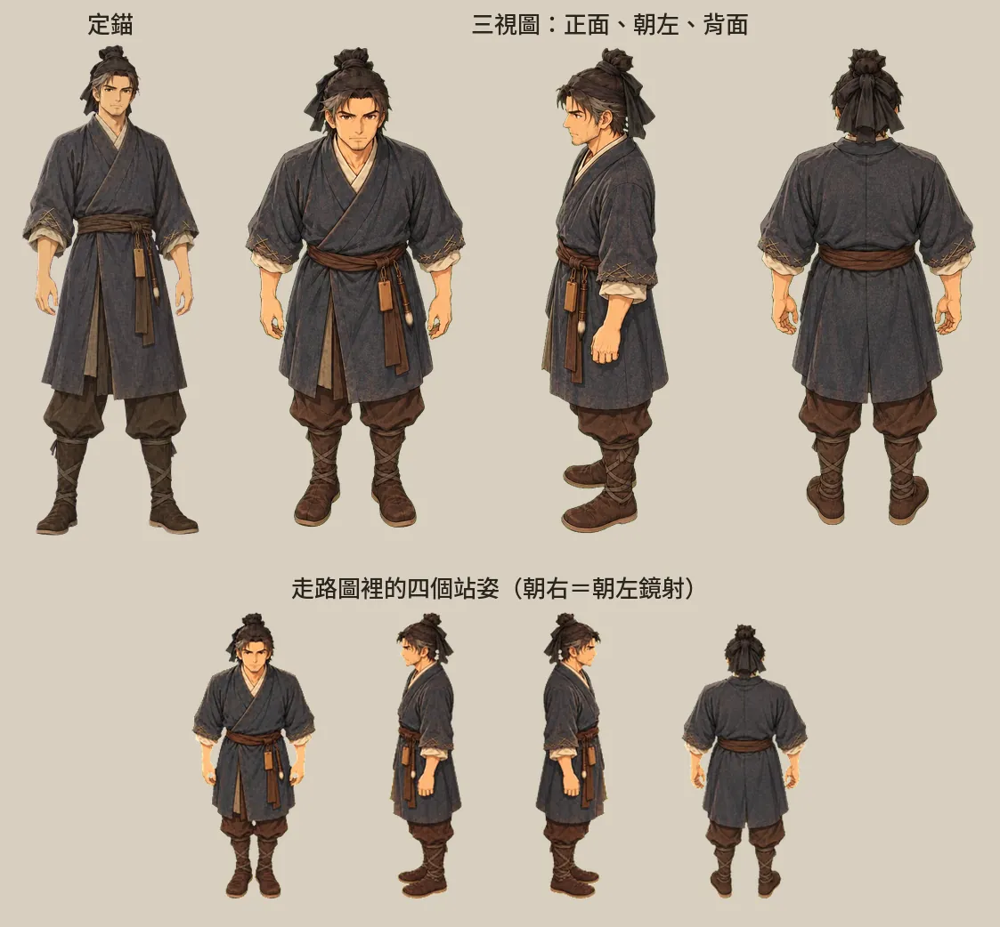
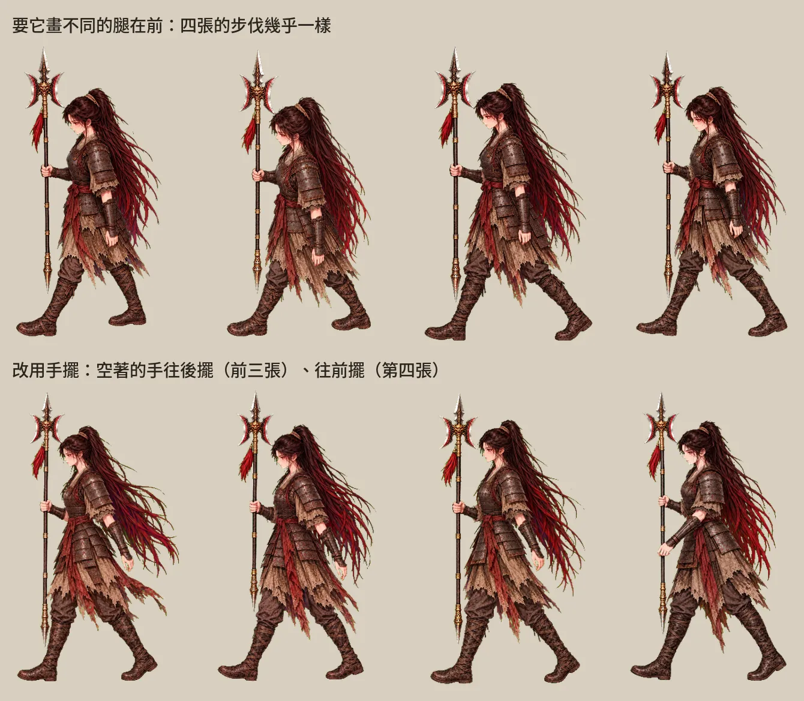
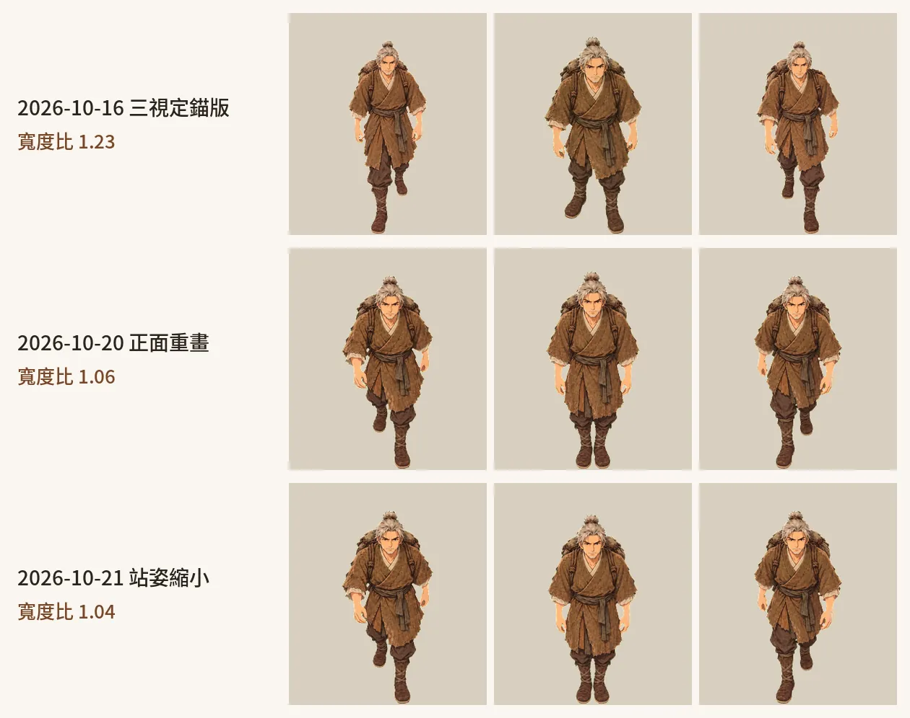
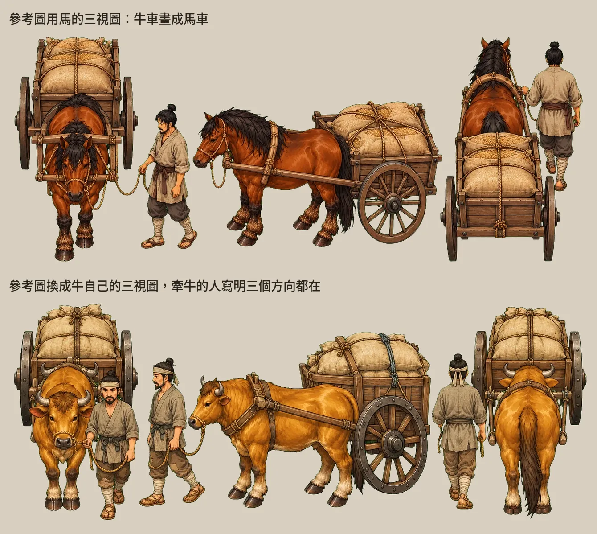
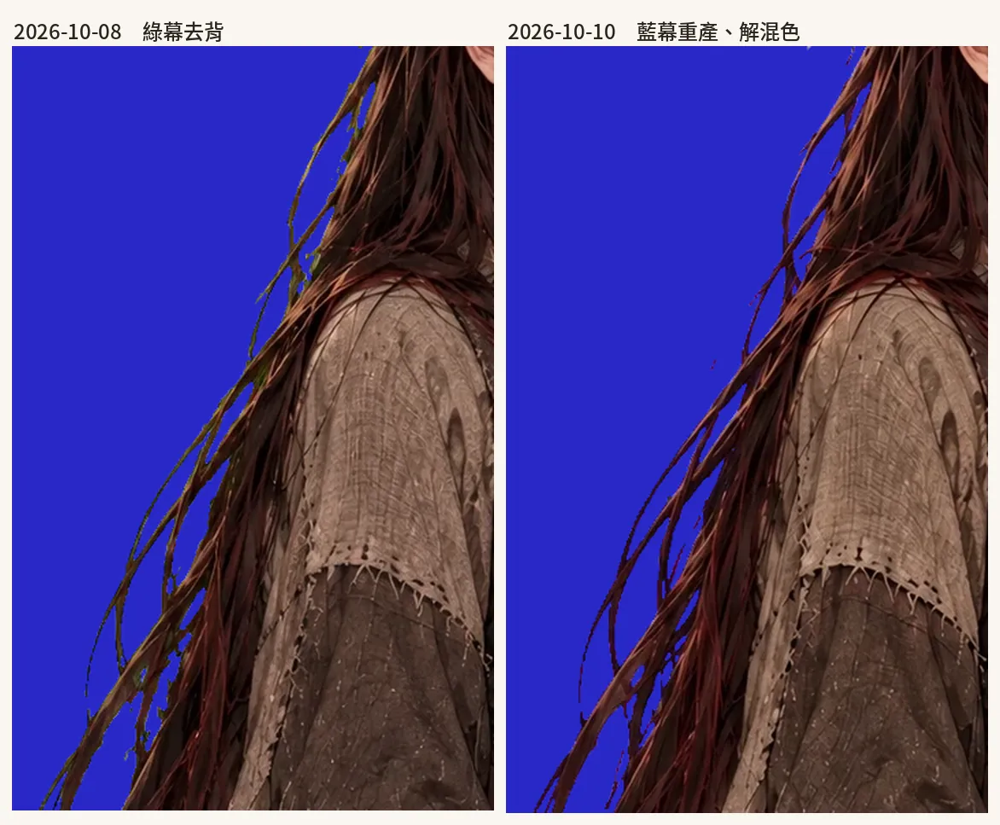

角色與走路圖
《續》地圖上會走的人有 62 個，每個人一張走路圖，四個方向、每個方向三格。這一章記下這些圖怎麼從模型手裡做出來：畫法前後換了三種，驗收看哪幾件事，模型最常畫錯哪裡、用什麼工具修，還有試過以後丟掉的做法。最後一節是對話立繪和去背。
一張走路圖長這樣
走路圖是一張 864×1536 的透明 PNG，切成 3 欄 × 4 列，每格 288×384。四列由上到下是正面、朝左、朝右、背面；三欄是跨一步、站著、換另一隻腳跨一步。三格輪著播（審查頁照「跨、站、跨、站」的順序），人就走起來了。
格子的大小改過兩次。開案時我定的是寫實比例、每格 48×64（2026-10-05 的素材清單），2026-10-06 第一章做出來當天改成 144×192。2026-10-07 我說「人物都好糊」：2560 寬的螢幕上，一個成年人顯示約 360 像素，原圖被放大兩倍多。AI 把每格加倍到 288×384，畫面上的大小不變，只是不再放大。Larch 的角色圖每格寬高上限是 512，288×384 還在範圍內。
除了 62 張走路的，還有坐在門檻上的五張、兩張船、一匹馬，和一張整格透明的（整張 CG 當地圖的場景，用它把主角藏起來）。
先有定錨，才畫走路圖
每個人先要有定錨：素材庫 library/角色/*.yaml 裡，一個年紀、一套衣服是一筆，附全身圖和給模型看的說明。原作《香布纏》已經有的人照原作的定錨；《續》多出來的時期在素材庫補了十筆：魏續十二歲、十五歲、四十五歲、五十五歲，湘九歲，荃五歲，魏續的爹、娘，侯成，宋憲。
走路圖的產線是 xu/game/art/walk.py。檔案開頭一張表 CAST，每個角色一列：掛哪幾張參考圖、身高比例、一段英文外觀描述。描述只寫長相和衣服，名字不寫進去，因為送單前的檢查器看到中文人名，就會要求掛那個人的定錨。拿武器的人多一段武器規則：
WEAPON RULE: the halberd is ALWAYS held in the character's OWN RIGHT hand in every figure and every direction (in the front view it appears on the viewer's LEFT side in all three figures); it never switches hands, the left hand is empty
身高比例是一個一個調的。荃五歲原本 0.52，比定錨矮太多，改成 0.62，站著大約到湘的腰帶。荃二十歲背上的弓尖高過頭，算進身高會把人縮小，定成 1.03，頭頂約到布的下巴。
路人要第二個、第三個的時候，也是另外畫一個人。2026-10-15 我在教練場看到兩個一樣的人，AI 先做了換色版（art/walkvar.py，臉不動、衣服換顏色），我看了回：「不要用這麼醜的方法換色就當作不同人」。之後兵、同袍、鄰居婦人、嚴家長輩、老人的二到五號，一共 16 個，都是另外寫的人（art/walk_cast_extra.py），描述開頭寫明參考圖只取畫風：
a DIFFERENT person from image 1 (image 1 is only the painting style and the poor frontier clothing look)
第一種畫法：一個方向一張圖（2026-10-06 到 2026-10-15）
最早的流程是每個角色產四張 1536×1024 的綠幕圖，一張一個方向，一列三個人（跨步、站、跨步）。先產正面，其他三個方向拿正面那張當 Image 1，確保是同一個人。產完跑 walk.py cut：去背，照位置切出十二個人，十二格用同一個倍率縮放、腳底貼齊同一條線，縮完再去一次綠邊。
改成俯角
2026-10-08 我定了兩件事：走路圖要跟地圖同一個俯角，人高改成原本的八成。地圖是從斜上方往下看的，平視畫的人站在牆、門、樹旁邊，看起來像立牌。提示詞加了一段鏡頭說明：
CAMERA ANGLE (most important): seen from a HIGH ANGLE, the camera looking DOWN at the character from above at about 50 degrees, matching a top-down RPG map: we see the top of the head and the tops of the shoulders, the body is foreshortened so the figure looks shorter and stockier than at eye level, the feet are slightly hidden under the body; NOT an eye-level front view.

改完當天中午我又抓到側面不對：俯角一加上去，朝左、朝右的人變成往左下、右下走。AI 把側面的提示詞改成「TRUE SIDE PROFILE」，寫明身體轉滿 90 度、走向水平。
逐張驗收，一邊對就鏡射
2026-10-08 下午我把第一到三章的人一個一個看過，每個方向標對或錯（art/walk_review.md）。很多角色左右只有一邊對：魏續十二歲、十五歲朝右對、朝左錯，魏續十八歲反過來。對的那一邊水平翻過去當另一邊，walk.py 記成 MIRROR_LEFT、MIRROR_RIGHT 兩張名單。鏡射以後，拿武器的手會換到另一邊，這一點我接受。
我驗收走路圖看這五件事，後來寫進 xu/README.md 的產線一節：
- 跟地圖同一個俯角，人高八成。
- 朝左、朝右是正側面，走向水平。
- 兩步要換腳，手要明顯前後交替。我覺得手擺是走路最大的視覺重點。
- 武器固定在右手。
- 衣服照角色的定錨。
模型常畫錯的地方，跟修的工具
模型最常畫錯四種：兩步同一隻腳在前、兩步的手都垂著沒擺、武器換手、側面畫成四分之三側。從 2026-10-08 起，AI 把修的步驟寫成 xu/game/art/walkfix/ 裡幾支小程式，做法都是「拿一個人重畫，只改一件事」：
cand.py：同一個方向多產幾張候選，candsheet.py排成對照表來挑。swapleg.py：拿候選的第一個人，產「換腳、手也跟著換邊擺」的版本。前提是原圖的手本來就有擺。frontpose.py：正面、背面兩步的手都垂著時用。直接寫明「自己的左腳在前、右手往前」，還寫出這隻腳在畫面的哪一邊（正面時角色的左腳在畫面右邊）。拿武器的人右手不動，只擺左手；武器畫在左手的原圖，先整張翻成右手再改。sidepose.py：側面用。模型側面換不了腳，改寫「近鏡頭的腿在前、近手往後」和「遠腿在前、近手往前」兩種，各產兩張。carrypose.py：第七章魏續背著荃，兩手托著荃的腿不擺，只換腳。compose.py：把挑好的第一格、站姿、第三格組回一張三格圖，再跑walk.py cut。edit.py：整列重畫，只改指定的一件事。第九章蟬的斗篷就是這樣改的：定錨圖上的斗篷本身有毛邊，規則卻寫「斗篷是完整的料子」，所以這一次不掛定錨（NOREF=1），只掛原圖。
frontpose.py 送出去的姿勢句長這樣（正面、自己的左腳在前、兩手空著的人）：
POSE: the character's OWN LEFT leg (on the viewer's RIGHT side of the picture) steps FORWARD toward the viewer (its foot lower in the picture, nearer the camera); the own RIGHT leg is behind. The OWN RIGHT arm (on the viewer's LEFT side) swings clearly FORWARD toward the viewer, the hand in front of the belly/thigh, clearly lower and nearer than the other hand; the OWN LEFT arm (on the viewer's RIGHT side) swings clearly BACKWARD behind the hip, the hand partly hidden behind the body.
2026-10-09 我把整部交給 AI，要它自己做到每一章都能玩。那幾天第四到九章新做的走路圖，AI 都逐格放大檢查再修。第四章一次重做六張：魏續二十七歲背面第一步手沒擺；布二十五歲的正面、背面、朝左，空著的左手兩步都垂著；湘朝左兩步同一隻手在前；丁原正面兩步同一隻腳在前；李肅背面兩步同一隻腳在後；荃五歲整張重產，衣服也從米色改回定錨的淡綠。長袍角色的腿被袍子蓋住，看不出哪隻腳在前，就以兩步的手有沒有明顯交替為準。
第二種畫法：先站好，再跨步（2026-10-15）
一個方向一次畫三個人，三格是同時畫出來的，跨步那兩格跟中間的站姿沒有關係，腳常常畫壞：抬腳、單腳。2026-10-15 我問：「你製作的時候是有先製作出 4 方向的站立勢，然後才用 4 方向的站立動作去產生跨左腳和右腳交替 2 張嗎？」AI 照這個寫了 art/walk2.py：先產四個方向的站姿，再拿站姿產兩張跨步，每張圖只有一個人。
同一天我還抓到兩件事，都寫進了提示詞：
- 舊圖裡有人走路時一隻腳離地。提示詞加了「FEET RULE」：每一格兩腳都踩在同一條地平線上，前腳腳跟著地，後腳腳尖和腳掌還貼著地。
- 一再拿上一張重畫，奉先的甲越畫越紅，疊了好幾層還帶出雜訊。提示詞加了「COLOR CONTROL」，切圖時再量一次顏色：人物的平均色度（Lab 的 a、b）不能比定錨圖高出 8 以上，超過的部分整體拉回，只動色度、不動明暗。去噪也試了一版。
我同意顏色以原始定錨圖為準，正面、背面讓程式自動驗：兩張跨步最低的那隻腳要一左一右，長戟要在對的一側，不合格的自動重產。AI 拿布十九歲試跑四種（現行版、舊流程加兩腳著地、新流程、新流程加去噪），做成一頁動畫對照（xu/讀本/走路圖試跑_布19歲.html）給我看。
第三種畫法：三視定錨（2026-10-16 起）
到 2026-10-16，我抓到的問題還剩四個：側面要嘛畫成平視，要嘛往左下、右下走；兩步同一隻腳在後；奉先越畫越紅；很多角色當初沒複查，鏡頭和腳都不對。
側面的提示詞，試了三版
「正側」和「俯視」兩個要求，在模型裡會互相拉扯：寫重正側，畫出來變平視、看不到頭頂；寫重俯視，人就往左下、右下走。art/側面提示詞紀錄.md 記了三版：
| 寫法 | 結果 |
|---|---|
| 舊的 TRUE SIDE PROFILE 加俯角 | 平視的正側 |
| 俯視寫重，胸口略朝鏡頭 | 往左下、右下走，我否決 |
| 走向和鏡頭分開寫：走向完全水平、身體轉滿 90 度；鏡頭只決定看得到多少頭頂，不准轉動身體 | 湘十七歲、魏續的娘朝左朝右都對 |

關鍵句在 art/walk_side.py：
The camera elevation changes only what we see of the top (crown of the head, top of the far shoulder, ground plane), it must NOT rotate the body: the body stays in exact side orientation and walks exactly horizontally. A flat eye-level profile is WRONG and a diagonal walking-toward-the-camera figure is ALSO WRONG.
一張三視圖當定錨
接著改成每個角色先畫一張三視圖：同一個鏡頭、同一套衣服，一次畫出正面、朝左、背面三個站姿，像人站在轉盤上轉，鏡頭不動。這個做法我認可以後，三視圖就是每個角色走路圖的定錨，十二格都從它來；朝右直接拿朝左鏡射。我那天看出模型畫的朝右，本來就是朝左的鏡像，直接鏡射，左右兩邊的角度才會一致。

一張畫四個方向、八個方向的轉盤也試過（art/walk_four.py、art/walk_eight.py），沒採用：朝右只是朝左的鏡射，順序又常被畫反。
讓 Codex 看圖驗收
模型常把三視圖的順序畫反，提示詞寫了也不能信。我提醒過，程式化的時候要先檢查第幾個人是正面、背面、朝左，拿到的定錨才對。AI 的做法是每一步產完，叫 Codex 看圖、用 JSON 回答，不合就重產（art/walk3_all.py）：
- 三視圖：問由左到右三個人各是正面、朝左還是背面，剛好是「正、左、背」才收，最多三次。
- 正面、背面各產兩張跨步，問「往前跨的是角色自己的左腳還是右腳」，兩張要不同，一樣就重產第二張，最多三次。
- 側面另外處理，見下一節。
- 組成十二格，校色、去背、切圖。
跨步只拿三視圖當參考，不再拿上一張的成品當下一張的參考，顏色和雜訊就不會一層一層疊上去。
側面看手，不看腳
側面兩步的腿，模型畫不出差別：要它畫近鏡頭的腿在前、遠的腿在前，兩種都畫成近的那隻在前，Codex 看圖也判不出來。我說：「手擺動是配合腳的，所以通常手擺對了，腳應該也是對的。」側面兩格改用手擺來分：A 是近鏡頭那隻手往後擺，B 是往前擺，Codex 只判手，不對就重產，最多四次（art/walk3_side.py）。

不能信的量測
AI 寫過幾支自動判斷的程式，後來發現不可靠：
- 拿外框的中線判斷哪隻腳在前：長戟會把外框拉歪。
- 拿臉上膚色的重心判斷朝左朝右：頭髮一蓋就不準。
- 比對兩張跨步的腳部輪廓（
art/feet_diff.py，這個比法是我提議的）：布十九歲的背面我確認過是對的，它判成同一隻腳。所以只能當參考。後來拿我標過的資料校準門檻（兩張直接比的重疊度，減掉翻轉後比的重疊度，要小於等於-0.02才算換了腳），才放進重畫工具裡當其中一關。
一天重畫 51 個，看了四輪
2026-10-16 這套流程重畫了 51 個角色：第一批 29 個是劇情人物（奉先各年紀、荃、蟬、丁原、李肅、敵兵、魏續各時期、湘、爹娘、嚴家長輩），第二批 22 個是兵、同袍、鄰居、嚴家長輩、老人、軍候、胡騎。我當初複查過的魏續十二、十五、十八歲和湘的常服先沒動。
看圖的方式也改了。原本的審查頁（xu/game/art/review/index.html）是每個角色四個小動畫加一張整圖，有意見寫在框裡，看完按「複製回饋」貼回給 AI。我說圖太小、沒有動態看不出差異。AI 改做 xu/讀本/走路圖檢查.html：一次看一個角色，四個方向各一列原尺寸動畫，可以放慢，每列旁邊一個「有問題」的勾和留言欄。我又要它像預覽器那樣，勾和留言直接存成檔案，AI 讀檔就知道（讀本/serve_review.py，存到 讀本/走路圖回饋.json）。中間踩到一個坑：走路圖的檔名不變，瀏覽器一直給我看湘的舊圖，伺服器改成不讓瀏覽器留快取。
那天我的回饋集中在幾件事：腳沒換、武器換手、手擺不對、站姿兩手交握在身前。AI 寫了 art/walk5_rows.py 重畫被勾的方向：一個方向的「跨步、站、跨步」畫在同一張圖裡，武器比較會留在同一隻手；每張候選過兩關，腳部輪廓確認換了腳，Codex 確認三個人的武器在同一隻手、側面三個都朝左，最多六張裡挑通過的。git 裡那一天一路記到第四輪重畫。
另外兩個小修：正面跨步有些畫成兩腳大開，AI 加了 art/stride_width.py 量兩腳左右分開的距離，提示詞改成短而自然的一步；三視圖的正面站姿常畫成半步跨出，art/walk3_stand_front.py 單獨重畫一張雙腳併攏的。
走起來一下大一下小（2026-10-20）
2026-10-20 我試玩第九章，六十二歲的魏續正面走起來怪，一下大一下小；第八章我也看到同一件事。原因出在切圖：三視定錨流程把每一格各自縮到固定高度，正面跨步時往前那隻腳在畫面上比較低，外框變高，縮到同一個高度，身體就跟著變小。
AI 加了 art/walk_sizes.py 量全部走路圖：正面、背面兩列各自三格的寬度，最寬除以最窄超過 1.12 就列出來。門檻要分得開我看得出來的和正常的：魏續五十五歲正面 1.25、舊的六十二歲 1.23，我看得出來；四十五歲 1.04、重畫後的六十二歲 1.06，正常。超標的 25 個角色用 walk5_rows.py 重畫正面，多加一關：跨步的外框比站姿高超過 4% 的候選不收。我看過說沒問題的六十二歲那兩張，是 3.0% 到 3.6%。
這裡也踩到一個坑。walk5_rows.py 原本在所有候選都沒過的時候，會拿第一張沒過的換上去，布十九歲的背面就這樣被換成腳沒換、抖得更厲害的版本。後來改成沒有候選通過就保留原本那一列。
背面也有同樣的問題，布十九歲、布十歲的背面重產兩次都沒有候選通過。我的想法是：「身體的部份不要變，如果是站著時太大，那就縮小站著時，讓身體跟走路時一樣大。」AI 寫了 art/walk_stand_fit.py：拿頭頂往下 35% 的輪廓（頭和肩）對齊，算出站姿那一格比跨步大幾倍，站姿整格縮回去，腳底貼回原本的底線。建議值上限定在 1.18，因為披散的頭髮、垂著的手會把輪廓撐大，布十九歲的背面量出 1.48，照縮會整個人小一截。
縮多少由我決定。AI 把每一張的正面、背面做成確認頁：左邊原本、右邊縮過，兩邊都在動，旁邊一條滑桿（0.7 到 1.0），一開始放的是量出來的建議值。我一張一張拉，按「用調整後的」，選擇存在頁面的資料庫，AI 讀回來照比例換進遊戲。2026-10-21 凌晨換了 58 張（頁面存檔：走路圖站姿縮小）。拿 git 裡換之前、換之後的圖量：背面的站姿縮了 56 張，縮成原本的 90% 到 97%；正面縮了 24 張，92% 到 98%。建議值最低是 85%，換上去的最小是 90%，建議縮得多的我都拉回來一些。

新角色先看三視圖（2026-10-21）
地圖重做以後，五原城裡要有雞、狗、牛、豬，牛車、馬車、騾車，挑擔叫賣的、算命的、要飯的、巡查的軍官。這些新角色先各產一張三視圖（art/wuyuan/critters.py）：人拿鄰居的三視圖當畫風和鏡頭的參考，動物拿馬的，去掉綠底放上確認頁（存檔：新角色的三視圖）。我點頭以後，才照三視定錨流程做跨步。四隻腳的照第七章那匹馬的做法（art/walk3_horse.py，2026-10-19）：正面看兩條前腿交替，背面看兩條後腿交替，側面分成前腿張開、後腿張開兩個相位。
車子踩到一個坑。第一次產牛車，參考圖用的是馬的三視圖，牛車畫成了馬車，側面那張也少了牽牛的人。改成拿牛自己的三視圖當參考，提示詞寫明牽牛的人三個方向都要在，這次牛和人都對了。這條寫進了 xu/建城工法.md。

坐下、背人、划船
走路圖以外，主角還有幾種換上去的圖：
- 坐在門檻上（
art/sitpose.py，2026-10-09）：拿已經驗收過的正面站姿那一格放大當 Image 1，產同一個人坐在矮門檻上，十二格放同一張。大小先試過照身高的 0.7 倍，頭比站姿小一圈，改成照肩寬對齊：坐姿寬是站姿的 1.05 倍，高最多八成。第四、八、九章坐門檻都換這張。 - 背著荃（第七章）：用
carrypose.py只換腳，兩手托著不擺。 - 船：三張道具圖組成每格 512×512 的走路圖，朝右用朝左鏡射。2026-10-20 我回報船的正面、背面比側面大一倍，正背兩列縮了一半。
主角換成這些圖以後，離開地圖前要換回走路的那一張，不然下一張地圖還在划船。這是引擎「目前主角」的行為，細節在 Larch RPG 引擎實測。
對話立繪與去背
地圖上的對話和心聲用立繪（art/portraits.py，2026-10-07 起）。綠幕產一張 1024×1536 的半身像：從頭頂到大腿中段，身體微側，臉朝觀者；去背、裁到人、縮到高 1400。CG 對話卡上不另外放立繪，CG 裡已經有人。魏續多一種表情「忍住」，給心聲用：
神情：**忍住**：嘴唇抿緊、下巴微收、眼睛看向一旁，眼眶有一點紅但沒有流淚，像有話到了嘴邊又吞回去。
藍幕和解混色
2026-10-10 我看到布的立繪髮絲還有一點綠邊，問要不要改用藍幕，也說「其實續也是有綠邊」。AI 查到兩個原因：
- 髮絲邊上的半透明像素，是頭髮的顏色和綠幕混出來的。舊做法只把綠色壓到
max(r, b)，暗紅頭髮混了綠，壓完變成一圈橄欖色。 - 模型會把綠幕的反光直接畫進細髮絲的輪廓線。這些像素是不透明的，去背碰不到。
AI 改寫了 art/rekey.py：永遠從綠幕原圖重算，透明度照覆蓋率解，半透明像素用 F = (p − (1−α)·K) / α 把幕色減掉（K 是四個角量到的幕色），透明度低於 0.12 的直接透明，縮圖以後在邊緣再去一次幕色。布和荃的立繪改用藍幕重產：布是暗紅髮，荃的衣服和髮帶是綠的。去背照 cutout 這份 skill 的規則：選跟主體色相最遠的幕色，縮放用 premultiplied alpha，縮完再去一次溢色。
驗收印兩個數字：殘留幕色的像素數，和離透明區 5 像素以上卻還是半透明的像素數（主體被吃掉的地方會在這裡現形）。檢查圖把立繪貼在藍、洋紅、米色三種底上，綠邊在藍底和洋紅底上最明顯。結果殘留幕色除了湘的兩張（2 和 12）都是 0，湘本來就穿灰青色的衣服。

立繪也會撞臉
- 2026-10-17 我說兵和同袍「長得有點像魏續」。原因是兩張都掛了魏續的定錨當參考，衣服也照魏續的鐵灰札甲。重畫時參考圖換成另一位婦人的立繪，只取畫風，臉、頭髮、甲全部用文字重寫：兵是四十歲、兩頰凹陷、穿深褐皮甲的老兵，同袍是圓臉咧嘴笑、包靛藍頭巾、穿黃褐棉襖的新兵。
- 傷兵說話借的是「兵」的立繪，三個不同的人共用一張臉。2026-10-20 改成只顯示「傷兵」兩個字，不掛立繪。
- 奉先二十五歲的立繪畫了三版。前兩版的衣服參考是一張早期的服裝設計稿，我追問這張參考到底有沒有在作品裡出現過；查下來作品裡的百花戰袍，是原作選定的〈梳整齊了〉〈那天晚上穿著百花戰袍〉兩張 CG 那一身，跟設計稿不同。第三版的衣服只照那兩張 CG，頭上照正典畫黑布冠加兩根細紅繩，因為正典裡金冠是 189 年才給的。
- 荃有兩張重畫過：十歲那張臉看起來像十四、五歲，表情冷，改寫成小學中年級的圓娃娃臉、四到五頭身、淺淺的笑；二十歲那張裙子只到大腿中段，改成蓋過膝蓋的布裙。
試過、沒有留下來的
- 換色當成不同的人：我看了說醜。路人的二到五號都改成另外畫的人。
- 一張圖畫四個方向、八個方向：順序常畫反，朝右也只是朝左的鏡射。
- 側面「俯視寫重」：人往左下、右下走。
- 側面用腿區分兩步：模型畫不出來，改看手。
- 外框中線、膚色重心、腳部輪廓單獨判斷：會被長戟、頭髮騙過去。
- 拿上一張成品當下一張的參考，一層一層重畫：甲越畫越紅，還多出雜訊。三視定錨以後，跨步只參考三視圖。
- 坐姿照身高縮放：頭變小，改照肩寬。
- 重畫都沒過關時換上第一張候選：圖反而變差，改成保留原本那一列。
接下來
五原新角色的三視圖在確認頁等我看，點頭以後照三視定錨做跨步，再放進重做的五原（走進原畫、建城工法：拼出來的城）。CG 的產線和規矩在 CG，各確認頁的存檔在確認頁一覽。